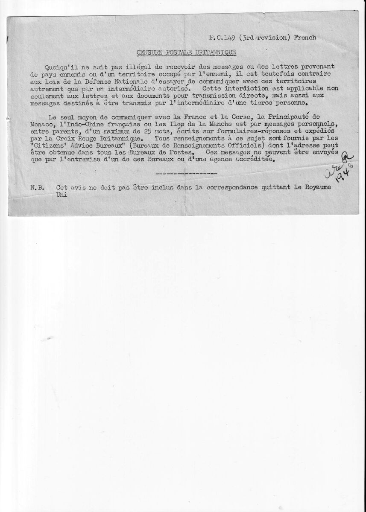

Notice de censure postale britannique, février 1944
Notice de censure postale britannique, février 1944
Pour situer ce document
Claude Saint-Léger est alors officier de liaison à Londres, où il rejoint en février 1944 la Mission Militaire de Liaison Administrative (MMLA) britannique. Il conserve dans ses papiers cette notice imprimée, référencée P.C.149, qui rappelle les règles de la censure postale britannique applicables à toute communication avec un territoire occupé par l'ennemi. Sa famille se trouve alors dans le Nord occupé : ce document fixe, pour lui comme pour tout Français installé au Royaume-Uni, le cadre légal et le canal unique par lequel un lien pouvait subsister avec elle.
Le contexte
Depuis l'invasion de 1940, la correspondance directe entre le Royaume-Uni et les territoires occupés par l'Allemagne est interdite par la législation britannique de défense nationale, y compris lorsqu'elle transite par un intermédiaire. Seule subsiste une voie encadrée par la Croix-Rouge britannique : le message personnel, réservé aux parents, plafonné à vingt-cinq mots, rédigé sur un formulaire-réponse et acheminé par son entremise ou par une agence accréditée. Les renseignements pratiques sont donnés par les Citizens' Advice Bureaux, présents dans chaque bureau de poste. Le dispositif couvre la France métropolitaine et la Corse, la Principauté de Monaco, l'Indochine française et les îles Anglo-Normandes. Pour les Français de Londres ayant de la famille en zone occupée, dont Claude Saint-Léger, ce mince canal de vingt-cinq mots constitue, en février 1944, l'unique moyen licite de donner ou de recevoir des nouvelles, dans l'attente de la libération du Nord qui n'interviendra qu'en septembre suivant.

P.C.149 (3rd revision) French
CENSURE POSTALE BRITANNIQUE
Quoiqu'il ne soit pas illégal de recevoir des messages ou des lettres provenant de pays ennemis ou d'un territoire occupé par l'ennemi, il est toutefois contraire aux lois de la Défense Nationale d'essayer de communiquer avec ces territoires autrement que par un intermédiaire autorisé. Cette interdiction est applicable non seulement aux lettres et aux documents pour transmission directe, mais aussi aux messages destinés à être transmis par l'intermédiaire d'une tierce personne.
Le seul moyen de communiquer avec la France et la Corse, la Principauté de Monaco, l'Indo-Chine française ou les Iles de la Manche est par messages personnels, entre parents, d'un maximum de 25 mots, écrits sur formulaires-réponses et expédiés par la Croix Rouge Britannique. Tous renseignements à ce sujet sont fournis par les "Citizens' Advice Bureaux" (Bureaux de Renseignements Officiels) dont l'adresse peut être obtenue dans tous les Bureaux de Postes. Ces messages ne peuvent être envoyés que par l'entremise d'un de ces Bureaux ou d'une agence accréditée.
-------------------
N.B. Cet avis ne doit pas être inclus dans la correspondance quittant le Royaume Uni
Sources
- Notice britannique de censure postale, P.C.149 (3e révision), imprimé en français conservé dans les papiers personnels de Claude Saint-Léger.